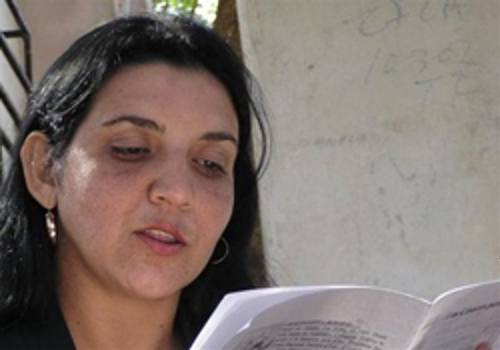

palomas, de la escritora Odalys Leyva Rosabal en la Feria Internacional del
Libro de la Habana, la mattina del 20 Febbraio, en la Sala Nicolás
Guillen de La Cabaña, pubblicato da Editorial Tunera Sanlope.

Son libros escritos en su generalidad en verso libre y prosa poética, ma
reúnen además textos en décimas. Sobre estos libros expresan los poetas
Diusmel Machado y Alexander Besú.
FANTASMAS INSULARES E INTEMPORALES
¡Brindemos por el reloj de los que lloran!, dice Odalys Leyva en uno de sus
versos de este libro, en una flagrante alusión al más terco de los problemas
incorregibles que martirizan al ser humano: el tiempo. El tiempo es un
problema para nosotros, un tembloroso y exigente problema, acaso el más
vital de la metafísica; la eternidad un juego o una fatigada esperanza. Questo
lo afirmó Jorge Luís Borges en su ensayo Historia de la eternidad,
contenedor de sorprendentes especulaciones personales sobre esa categoría
filosófica que forma parte de las utopías que el hombre sueña modificar.
Tuttavia, esta mujer angelada y promisoria, que se ocupa de asuntos
supuestamente más terrenales que la posteridad, acaba de poner en
entredicho, sin proponérselo (o quizás sí, ¿quién puede saberlo?), il
auténtica edad de Cronos en este libro titulado FANTASMAS INSULARES, il
última entrega de esta destacada autora cubana, sellada por la editorial
Sanlope. ¿Con qué piedras, con qué metales desmiente esta mujer su
condenación de finitud? ¿A qué armas acudió para someter al olvido? Tan solo
a la terneza de su voz, a la urgente brotación de su lirismo y a la
enumeración de sus vivencias, de sus amores nervudos y recientes que
involucran y suman, de sus dolores tautológicos y deshumanizantes. Odalys
desafía y degrada la supremacía del tiempo, y establece, como la hemos visto
hacer en otros títulos, vertiginosos canalizos comunicativos con puertos
clásicos de la cultura latina y universal. Y no solo lo hace con una
seguridad matriarcal, sino que se deleita diseminando su poder de dómina
domesticando con la palabra las gárgolas del tiempo, como ella misma exclama
en este libro que se me antoja, precisamente, un anticipo, un préstamo del
tiempo. Su reverberación perdurará porque es un poemario de sucesivas
virtudes y una sola carencia: solo adolece de la “capacidad de cesar”. Su
permanencia en el ámbito lírico cubano es una intuición, casi una profecía.
Apartada de toda actitud centrista, la autora revela su visión de la
existencia a través de axiomas o insinuaciones que no son otra cosa que la
cotidianidad humana con sus ilusiones y sus intrascendencias proyectadas
hacia un plano universal. Es la gravitación vital del hombre y su entorno.
Es la manifestación de la vida con sus regodeos y sus imperfecciones. Il
medición lineal del tiempo pasa a un segundo plano, o un plano indefinido y
displicente, ante la impostergable necesidad de la plenitud, por eso afirma:
Feroz es el amparo que no busco, no crean mi eternidad.
Según Jorge Santayana, Vivir es perder tiempo: nada podemos recobrar o
guardar sino bajo forma de eternidad. Pero Odalys, que sabe desarticular los
arquetipos, que poliniza el horror con su palabra, sabe que el tiempo
empleado en vivir amantemente no es una pérdida, sino una inversión. Más
temprano que tarde, las ganancias engrosarán las arcas del alma, pero antes
hay que manifestarlo, hay que desenvolver, como una alfombra roja, un
lenguaje expedito, sin barroquismos, sin excesivos arabescos, que ilustre y
resuma, que inaugure sentimientos, que traduzca la belleza sin pretensiones
de atrapar lo eterno, como lo ha hecho ella en este poemario.
No es un libro fundador de neocorrientes literarias, pero funda latidos
novedosos. No es tampoco revelador de secretos semánticos, pero devela las
recónditas galerías interiores de esta mujer que se gasta al servicio de la
poesía mientras le resta al tiempo toda su importancia y le anula toda su
jerarquía y voluptuosidad.
Entre las credenciales temático-ontológicas de este cuaderno aparece un
motivo muy recurrente en la poesía cubana de antaño y hogaño: il
insularidad. Es nuestro ámbito, nuestra maldita circunstancia y Odalys, di
corso, es parte de ella. Así lo afirma: Mientras yo sigo en mi caracol,
el mismo país, los muros y el mar que rodea los sueños. Y más adelante lo
reitera con todo el ritmo de sus yacimientos endecas:
Los frutos son lo verde, la existencia,
el mito, lo insular, cada congoja,
una lágrima azul en cada hoja,
y Dios que nos prodiga la sentencia.
En las palabras de contraportada, el poeta Diusmel Machado barrunta: ¿Qué
habrían dicho, oscuridad o luz mediante, los muy grandes poetas José Lezama
y Virgilio Piñera, de sumergirse en estas páginas? ¿Con qué palabras
definirían a quien, desde su femineidad consustancial y condición de ser
insular en su más profunda esencia, arriesga lo mejor de sí: la voz y su
Parola, para nombrar, conjurar y desafiarse? Una tradición palpable, y una
firme vocación por la libertad que obliga al reconocimiento de lo auténtico
y propio, acendran estos versos, sobre los que irradian sus polvos más
dispares —persiguiendo, con ello, la armonía— épocas y culturas, ecos y
discursos, corrientes de pensamiento y filosofías contrastadas, cernidos con
esfuerzo extraordinario en el tamiz de una voz omnívora, cuya apetencia mira
desde ángulos y perspectivas múltiples y sin la exigencia del acabamiento.
La noción de isla, choca sus márgenes aquí solo para una mejor expansión del
ser humano.
Odalys Leyva ha escrito un libro musicalino y cadencioso, que tiene vetas de
sinfonía y de tonada, con un lenguaje intemporal y muy contextualizado a la
vez. Vuelvo a citar al porteño bilingüe y brillante Borges, quien en su
polémico artículo titulado Nueva refutación del tiempo, afirmó: Tutti
lenguaje es de índole sucesiva; no es hábil para razonar lo eterno, Esso
intemporal. De acuerdo, ma, ¿qué tal si la intención nunca fue “razonar lo
eterno, lo intemporal”, y sí documentar lo bello, lo afectuoso, Esso
aparentemente trivial y cotidiano? Detrás de esas fruslerías, de esas
miméticas habilidades se oculta a veces también la eternidad. Sì, sabemos
que hay que esperar. Toda obra debe y tiene que arrostrar el desafío del
tiempo, pero yo no arriesgo nada al vaticinarle a este libro un largo y
estupendo itinerario. Al menos en el presente, ya lanza sus primeras señales
intermitentes con esa libertad lírica que se extiende como un Dios
imperecedero. Odalys es, sin lugar a dudas, un ser consustancial con su
propia poesía, comparten la misma materia. Una poesía híbrida, una aleación
de dos vocaciones: de arpa una, y de ánfora la otra. Por eso vibra y suena a
la vez que guarda viejos aromas. Olores y música sublimes y dolorosos,
llenos de naufragios interiores y exteriores, de urgencias, de soledades y
de apasionadas lástimas.
Gracias a Odalys Leyva una vez más, por este regalo para los sentidos, di
este libro lleno de bondades comunicativas. Bienvenido FANTASMAS INSULARES,
no sólo porque enriquece el acervo literario cubano, sino también porque
ilustra la cosmogonía personal de una mujer de eternos desasosiegos, ma
ungida con los profundos y misteriosos aceites de la poesía. Mis últimas
palabras para Odalys a través de una estrofa:
Odalys Leyva: no hay nada perdido.
Si ha de arrostrarse el tiempo, que se arrostre.
No temas al olvido, que a la postre
nada es más olvidable que el olvido.
El tiempo de versar no ha concluido,
no existen fechas de caducidad.Si quieres seducir la eternidad
insta a tu espíritu a su epifanía,
y apréstate a esperar que tu poesía
mitigue un poco tu insularidad.Alexander Besu Guevara.
YEMA DE LA ISLA
Una isla es el sol que nos bebe y nos ama,
el líquido en desnudez del astro,
vivir en las costas como novia de sus piedras,
las ciudades, las callejuelas, y al viejo pregonero
que ve los gorriones en las palmas
y no siente dudas de que una isla
es fiduciario de recuerdos,
de pianistas que hicieron temblar a los vitrales,
adoquines y tejas,
faroles y guitarra.Una isla es el teatro donde Bola de Nieve
marcó sus escaladas
y Ernesto Lecuona rozó todas las mulatas.
Alicia Alonso quiso besar los cisnes.Los caballeros, hidalgos que no son de La Mancha,
se trasladan sin la última marca de jeans
para atravesar el malecón
donde los jóvenes miran al mar
y tiran jazmines,
se besan y el pecado no está en los manjares
o en el mantel con frutos
que a la vista sigue siendo la isla,
y las naranjas y mangos
son un arco de luz,
la mesa, sitio sagrado,
unión donde la familia recrea la verdad,
unión de santos,
muros de pensamientos,
deslealtades,
interrogación sobre qué es Internet?
y qué los suicidios en grupo?El padre no entiende de satélites,
la madre no piensa en los videos,
ni en la TV por cable,
para ella existe el ajo y la cebolla,
asuntos de primera instancia,
el bolero y el son.
Los hijos son seres musicales,
hombres que en la escalinata de la Universidad
aplauden un concierto de Pablo o de Silvio.Unidos donde las banderas son una sola,
y la estrella es como la Isla que sigue al centro.
LA ÍNSULA PACTADA
He podido emigrar de mis antojos,
darle a la libertad su rosa blanca
y ser esa gaviota que se arranca
la venda traicionera de los ojos.
No he de pactar ocultos desalojos,
la mente se aprisiona turbulenta
y detrás de la fe el dolor se inventa
un camino de avispas y escorpiones.
(No me queda lugar para ilusiones
y me encuentro al final de la tormenta).El vuelo es un destino sin derrota,
las plumas no disgustan su letargo
más punza su licor fogoso, amargo,
en el ferviente sueño de ala rota.
Con sus nubes el aire es agua ignota,
nos sirve como elixir de los dioses
que saltan las fronteras, más no oses
en descubrir su copa de tormento,
disgustan su altivez en el lamento
y no quieren vivir humanos roses.Si libre me obsesiona la abstinencia
de conocer los potros y los ríos
es que oculto dañados desafíos
que sobran de la duda y la demencia.Trotar tiene su clase, leve urgencia
que desboca a través de los caudales;
disfruto de mi casa los vitrales,
el techo de sorpresa y de conjuro.
(La libertad es campo del futuro
donde deben purgar todos los males).El odio, la mentira, violaciones,
el robo, el desacato y el engaño,
la doblez, el mutismo, hasta el regaño…
todos deben sufrir las maldiciones.
De Dios han de llegar sobrias unciones
para los seguidores de perfidia,
el hombre hace mutismo en cada lidia;
son tantos los pecados en lo inerte
donde Judas prefiere cada muerte
antes de echar sus ojos a la envidia.Ser libre es no chocar con las fronteras,
saltar humildemente de los muros,
no esconder nuestras ansias, los apuros
de hacer del Universo mil maneras
donde vivir sin más enredaderas,
ni bejucos secándonos el alma.
El árbol tendrá flores en la calma,
el aire vibrará su grato aviso
y Dios debe brindar el Paraíso
donde la libertad su luz ensalma.Libre de todo grito, sin querella,
con el mar seduciendo cada ola
en la voz de adulzada caracola
que tiene libres pactos con la estrella.
Mar abierto, sin cruces ni centella,
negando la acechanza y falsedades
donde brotan humildes voluntades.
(Es la insularidad que fuego estalla,
nademos libremente por la playa
hasta juntar en Dios nuestras mitades).O.L.R.
EL APOCALIPSIS NO NIEGA LAS PALOMAS
Con la poesía delante para convencer de antemano, por el inefable prestigio
y efecto poderoso que su substancia tiene como humano patrimonio, una mujer
intenta desvelarnos, apelando a la sensibilidad común de la especie, Da
un grito de apremio que, cuando no apura, estremece. Los poemas son aquí las
esquirlas reunidas de un espejo atravesado por continua crisis, en un estado
permanente de violencias que amenazan la vida toda, más allá de la especie.
La tensión que acumulan sus páginas, obliga a una sensibilidad superior,
capaz de afinar el oído presto a los estallidos de estas horas de desafuero
continuo. Una sola urgencia: la invocación a la ternura. Una voz sola: la de
cada verso. Pactar a tiempo con el amor, es el ofrecimiento de este libro.
Diusmel Machado Estrada.
UNA ILUSIÓN ES MÁS QUE UN SALTO
Viajé por un día al abismo. La sangre en los ojos era tan fugaz como el
salto de un verdugo y las palabras ante mi navaja. Después del génesis los
jinetes tienen otra razón, andan con una concha a la cintura para anunciar
que el pasto es ilusión que enfrenta los puñales. El Apocalipsis no niega
las palomas, gorriones sin paraíso en un pueblo de brujos y guillotinas. Il
cuerda trae consigo un Rocinante, quiere limpiar el alma: perderán el lebrel
más hondo y libertad será el secreto, apoyo de su burla. Temen mi rencor,
mordidas donde Cristo guarda la tierra. En el templo mi blusa de palomas,
raída con los dientes. No eran cirios nupciales, hombres adictos a la
costumbre de las piernas abiertas, sin saber que nostalgia es un plagio o la
lengua huye para dejarse amar por todos los culpables de la lluvia.
UNA COPA NO MÁS
No estoy de acuerdo con las maravillas
que en el mundo ennoblecen su recodo
porque existe detrás de algún beodo
una mujer, sin luz. (Las manecillas
de un reloj que no marca las sencillas
formas de andar si el Universo peca.)
Es que detrás del vaso algún enteca
decepciona sus dioses; pero elije
-sin que la desnudez de un rostro fije-
un camino de horror que el tiempo seca.Duele tanta viudez, llanto enfermizo,
el arca maldecida que endiablada,
esconde la traición y en la mirada
devuelve el subterfugio más castizo.
El Diablo es la perfidia del hechizo;
el hombre busca en Dios el aposento
¿Quién marca con las uñas lo violento?
¿En qué cruz a Jesús lo han marginado?
Regresa con la herida en el costado
para salvar los siglos del tormento.O.L.R.
Cordialmente grupo Décima al Filo.